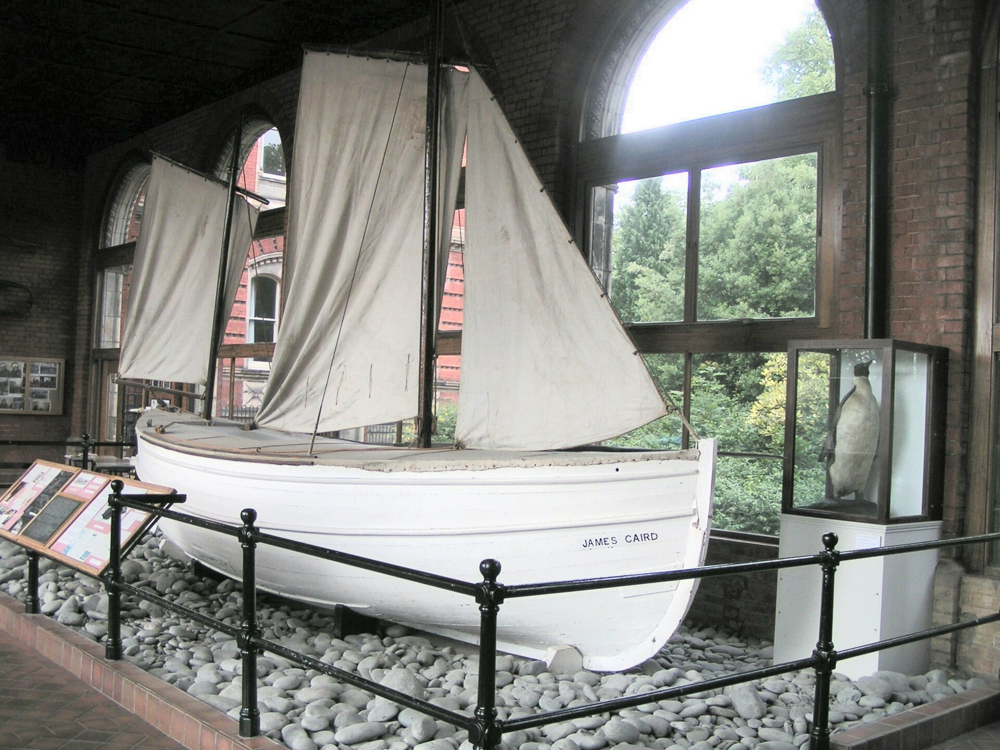

Chapter 16
The Utmost Navigation
Seen from above, the beach is a thin pale line, the sea a grey sheet stretching away, and beyond it the mountains rise — the peaks that would be the next obstacle between the Boss and rescue. But that was later. First came the sea.
At 61° 00’ South, 54° 50’ West, on 24 April 1916, the James Caird rode at anchor in the lee of Elephant Island, a twenty-two-foot lifeboat preparing to cross eight hundred miles of the Southern Ocean. The position was precise, logged by Frank Worsley in the navigation book he kept tucked inside his oilskins. The ocean that stretched before them was not. The Southern Ocean in late autumn produced waves that rose thirty and forty feet, driven by depressions that circled the globe without landfall to slow them. The spray from those waves froze on contact, coating rigging and gunwales in layers of ice that could swamp a small boat in hours. The Caird carried six men, a month of provisions, and no margin for error. Shackleton had taken supplies for only four weeks, judging that if land had not been reached within that time the boat would be lost.
The contrast was total: a tiny vessel, her position marked to the minute of arc, against an ocean that recognized no position at all.
Shackleton had selected his boat party with calculated precision: himself, Worsley, Crean, McNish, and sailors John Vincent and Timothy McCarthy. On instructions from Shackleton, McNish immediately set about adapting the James Caird, improvising tools and materials. The carpenter had earlier clashed with Shackleton when the party was stranded on the ice but, while not forgiving the Boss, recognized that their survival now depended on collective effort. McNish raised the gunwales by ten inches, fitted a makeshift deck of canvas and spars, and strengthened the keel. The modifications transformed a lifeboat designed for sheltered waters into something that might, just possibly, survive the open sea.
Wild was to be left in charge of the Elephant Island party, with instructions to make for Deception Island the following spring should Shackleton not return. Shackleton took supplies for only four weeks, judging that if they had not reached South Georgia in that time, they would not return at all.
The mathematics of the gamble were brutal. Eight hundred miles of ocean. A boat twenty-two feet long. Six men. The Caird carried no radio. She had no engine. Her only shelter was a canvas dodger lashed to a makeshift frame. The target—South Georgia—was a narrow island, a blade of rock a hundred miles long, mislaid in the vastness of the South Atlantic. To find it required navigating across the wildest sea on Earth, in winter, with a sextant and a chronometer that might or might not still be accurate after months on the ice.
The Caird pushed off from Elephant Island at 12:30 in the afternoon. The men rowed through the swell until they cleared the headland, then hoisted the lugsail. The wind was from the northwest, a following breeze that pushed them toward South Georgia. For the first few hours, the boat made good progress. The coast of Elephant Island shrank behind them, a line of dark rock against the grey sky, and then disappeared.
Worsley’s navigation began with a position he knew: the anchorage at Elephant Island. From there, everything depended on dead reckoning—estimating the boat’s position from its course and speed, corrected for drift—punctuated by whatever celestial sights he could manage. The theory was straightforward. The practice was something else entirely.
The Southern Ocean does not permit leisurely observation. A sextant requires a stable platform and a clear horizon, both rare commodities in a twenty-two-foot boat in a gale. Worsley had to wait for moments when the clouds parted and the horizon steadied, then take his sight in seconds, the boat pitching beneath him, spray freezing on his glasses. He calculated his sights on a sodden chart, working the math in his head or with stubs of pencil. The results were approximations, better than nothing but far from certain.
On the first night, the wind freshened. The Caird began to ship water, not from waves breaking over the side, but from spray driven by the gale. The canvas deck McNish had fitted was not watertight; water pooled in the low spots and seeped through the seams. The men took turns bailing, a rhythm established that would continue for the next sixteen days: an hour at the pump, an hour at the helm, an hour huddled under the canvas, trying to rest.
The cold was immediate and absolute. The temperature fell below freezing each night, and the spray that coated the boat turned to ice. The Caird grew heavier with each passing hour, the ice accumulating on deck and rigging, the gunwales thickening until the boat rode lower in the water. They had to chip the ice away constantly, an exhausting labor that left hands numb and bleeding.
Shackleton established the watch system: two men on deck at all times, one at the helm, one tending the sails and bailing. The remaining four huddled in the cramped space below the canvas dodger, trying to sleep, trying to stay warm. The watches rotated every four hours, though in practice the system broke down constantly. A squall would require all hands. A sail would tear and need mending. Ice would build up faster than two men could clear it.
The boat carried two compasses. One was fixed to the deck, the other a handheld spare. Both were affected by the iron in the boat’s fittings, and Worsley had to correct for deviation. The correction tables had been calculated for the Endurance, a ship that no longer existed. How those corrections applied to the Caird was another approximation, another layer of uncertainty.
By the second day, the boat was already taking on water faster than expected. The seams had not been designed for this kind of punishment. The caulking McNish had applied was holding, but the planks themselves were flexing, opening gaps that let in the sea. The bailers worked continuously. Vincent and McCarthy, the two able seamen, took on much of the physical labor, Vincent’s strength and McCarthy’s endurance keeping pace with the endless demand.
On the third day, the weather worsened. A depression moved through, bringing gale-force winds and seas that towered above the tiny boat. The Caird rode the waves like a cork, rising to each crest and sliding into the troughs, the motion violent enough to throw men from their feet. The canvas dodger tore in the wind, and McNish spent hours stitching it back together, his hands stiff with cold, the needle difficult to grip.
The navigation problem had now become acute. Worsley had not had a clear sight of the sun since the first day. The sky remained overcast, a uniform grey that offered no hint of the sun’s position. He estimated their position from the course they had steered and the distance they had run, but the estimates accumulated error with each passing hour. The drift—the leeway the boat made sideways through the water—was impossible to measure accurately. The currents in the Southern Ocean were complex and poorly charted. A mistake of even a few degrees in course, compounded over days, could put them hundreds of miles from their target.
South Georgia offered no margin. The island was small, and the approach was dangerous. A boat that missed the island to the north would find nothing but open ocean until the coast of South America, three thousand miles away. A boat that missed to the south would find the Antarctic ice. In either direction, the outcome was the same: the boat would run out of food and water, the men would die.
Shackleton understood the mathematics. He had chosen the route because it had the best chance of success, not because it was safe. There was no safe route from Elephant Island. The only question was which route had the highest probability of success, and that route led to South Georgia.

The fourth day brought a brief clearing. Worsley caught a sight of the sun through a gap in the clouds, a momentary glimpse that lasted perhaps thirty seconds. He worked the calculation quickly, his fingers numb, the sextant cold against his skin. The result was a position: 58° 10’ South, 52° 40’ West. He compared it to his dead reckoning. They were close to where he had estimated, but not exactly. The error was small, but it was there.
The sight gave him a fix, a point of certainty in an uncertain world. From that point, he could calculate a new course. The target was South Georgia, but the course was not a straight line. The wind dictated the route, and the wind was from the northwest, pushing them southeast. They could not sail directly to South Georgia; they had to tack against the wind, making progress in a series of angles. Each tack cost time and distance, adding miles to the journey.
The fifth day brought another gale. The wind shifted to the southwest, bringing colder air and heavier seas. The temperature dropped sharply. The spray that broke over the boat froze instantly, coating every surface in a layer of clear ice. The Caird became a hazard: the deck was slippery, the ropes stiff with ice, the canvas frozen solid. The men moved carefully, testing each foothold, aware that a fall overboard meant death.
The ice accumulated faster than they could clear it. They chopped at the layers with whatever tools came to hand—the adze, the knife, even a spoon—breaking off chunks that fell into the sea. But the ice grew back within hours. The boat grew heavier, riding lower in the water, the gunwales nearly level with the sea. The weight made the Caird sluggish, harder to steer, slower to respond to the waves.
Shackleton ordered the stores checked. The water and food were holding out, but the consumption was higher than planned. The men were burning calories faster than expected, the cold and the physical labor demanding more fuel. The rations had been calculated for four weeks, but four weeks of what? Of sitting in a boat, conserving energy? Or of fighting for survival, bailing and chopping ice, working through the nights?
The sixth day brought a sight that lifted the men’s spirits: albatross. The great birds circled the boat, their wings motionless, riding the updrafts. Albatross ranged far from land, but their presence suggested that land was not impossibly distant. The men watched the birds with something like hope.
But the sixth day also brought something else: the first sign of physical collapse. John Vincent, the strongest of the party, began to weaken. The cold and the wet had penetrated his oilskins, and his body, pushed beyond its limits, was beginning to fail. He developed severe pain in his back and legs, the result of days of huddling in cramped positions. He could still work, but his movements were slower, his strength diminished.
McCarthy, by contrast, seemed tireless. The young Irishman took on extra watches, sang to keep up morale, and maintained a cheerful demeanor that the others found both admirable and inexplicable. McCarthy’s endurance would become legendary, but at the time, it was simply a resource to be used. Shackleton assigned him the hardest work, knowing that McCarthy could take it.
The seventh day brought the worst weather yet. The gale had intensified during the night, and by morning the wind was howling, the seas mountainous. The Caird was barely under control, the helm requiring constant attention, the sail reefed down to a scrap of canvas. The boat was making way, but barely. The waves picked her up and threw her down, the impact shuddering through every timber.
At some point during the day, a wave larger than the others struck the boat broadside. The Caird heeled over, the gunwale dipping below the water, the sea flooding the cockpit. For a moment, the boat seemed to hang there, balanced between recovery and capsize. Then she righted herself, the water draining over the sides, the men gasping and cursing.
But the water had found a new entry point. The impact had opened a seam near the keel, and the sea was coming in faster than before. The bailers worked frantically, but the water was gaining. The boat was lower in the water now, the freeboard reduced, making her more vulnerable to the next wave.
McNish examined the leak. The carpenter lay on the frozen deck, his head over the side, trying to see the damage below the waterline. The source was hard to locate, but he could see the water streaming in through a gap in the planking. He could not fix it from outside; he would have to work from inside, in the cramped space below the canvas, where four men were trying to rest.
He took a piece of canvas and some nails and went below. The space was dark and crowded, the air foul with the smell of wet wool and bilge water. The men there moved to give him room, watching as he felt along the planks, trying to find the leak. Water dripped on him from above, and the boat pitched and rolled, making the work nearly impossible. But McNish was a carpenter, and carpenters know how to work in difficult conditions. He found the gap, forced the canvas into it, and nailed it in place. The leak slowed. It did not stop, but it slowed enough that the bailers could keep up.
The eighth day dawned clear. For the first time in four days, the sun broke through the clouds. Worsley had his sight, and he took it with desperate precision. The result: 56° 30’ South, 48° 20’ West. They had made progress, more than he had estimated. The southwest wind had pushed them north as well as east, and they were now in the fifties, the latitude of South Georgia.
But South Georgia was still hundreds of miles away. The position was encouraging, but it was not a guarantee. The weather could turn again, the wind could shift, the boat could founder at any moment. The men allowed themselves a measure of hope, but they did not celebrate.
The ninth day brought another gale. The pattern was establishing itself: a day or two of relative calm, then a depression sweeping through, bringing wind and waves that tested the boat’s limits. The Southern Ocean in winter was a machine for producing storms, and the James Caird was a small object in its path.
The tenth day marked a week at sea. The men were now deeply tired, the kind of exhaustion that accumulates over days and cannot be relieved by a few hours of sleep. They moved stiffly, their joints aching, their skin raw from the cold and the wet. Sleep came in fragments, snatched between watches, never deep enough to restore. The food—biscuits, pemmican, powdered milk—provided calories but no comfort. The water was rationed, each man allowed a small amount per day, barely enough to slake thirst.
Vincent’s condition had worsened. He was now effectively disabled, unable to stand watch, unable to bail, unable to contribute to the work of keeping the boat afloat. He lay in the bottom of the boat, his body huddled under blankets, his face grey. Shackleton checked on him regularly, knowing that if Vincent died, they would have to bury him at sea, another weight gone, another mouth that no longer needed food.
McNish was also struggling. The carpenter’s hands, which had done so much to prepare the boat, were now swollen and painful, the joints stiff with what might have been the beginnings of frostbite or arthritis. He could still work, but each movement cost him.
Crean and McCarthy remained strong. Crean, the veteran of two previous Antarctic expeditions, had a constitution that seemed immune to hardship. He took on extra watches without complaint, his steady presence a comfort to the others. McCarthy, the youngest of the party, had an irrepressible good humor that defied the circumstances. He sang, he joked, he worked harder than anyone.
Worsley was in his element. The navigation problem consumed him, demanding every ounce of his skill and concentration. He had spent his career at sea, but this—this was something else. This was the test of a lifetime, a problem with no margin for error, where success meant survival and failure meant death. He later called it “a merry jest of guesswork,” but the jest was bitter, and the guesswork was all that stood between them and oblivion.
The eleventh day brought a critical moment. Worsley had been working from dead reckoning for two days, the sky overcast, no sun visible. The estimated position was uncertain, the error accumulating. They needed a sight.
In the afternoon, a gap appeared in the clouds. Worsley grabbed the sextant and moved to the most stable part of the boat, the centerline near the mast. The boat was pitching heavily, the horizon rising and falling with each wave. He had to time his sight to the moment when the boat was level, the horizon steady, the sun visible. He waited, the sextant to his eye, his body bracing against the motion.
The moment came. He caught the sun, brought it down to the horizon, and read the angle. The calculation followed: altitude, refraction, dip. The result was a latitude, but not a longitude. For longitude, he needed a time sight, and the chronometer—the precious chronometer that had been carried from the Endurance—had not been checked in days. Its rate might have changed, its accuracy might have drifted. He worked the calculation anyway, using the best estimate he had.
The position placed them about a hundred miles from South Georgia. The island was close, but the approach was dangerous. The coast of South Georgia was rocky, the shores lined with reefs and breakers. A boat approaching in a gale, unable to see, unable to steer precisely, would be at the mercy of the sea. They had to reach the island, but they also had to survive the landing.
The twelfth day brought a shift in the wind. The gale had blown itself out, and the wind backed to the northwest, the favorable direction. The Caird made good progress, the miles falling away. Worsley estimated that they were now within fifty miles of the island. But the sky was still overcast, and the position was still uncertain.
The thirteenth day brought the first sight of seaweed—kelp, floating on the surface. Kelp grows near land, and its presence was a sign that the coast was near. The men watched the water carefully, looking for more signs, looking for the dark line that would be land.
The fourteenth day brought another gale, the worst of the voyage. The wind came from the south, driving the boat north, away from South Georgia. For hours, they fought to hold their position, the sail reefed to nothing, the helm lashed, the men huddled below. The waves were enormous, the crests breaking over the boat, the noise a continuous roar. The Caird was not making way; she was simply surviving, riding out the storm.
The fifteenth day brought a clearing. The gale had passed, and the wind shifted back to the northwest. Worsley took a sight and calculated their position. They were north of South Georgia, pushed off course by the storm. The island was still there, but it was further away than it had been the day before. The voyage would take longer than planned.
The sixteenth day began with a sight that would become famous. At about noon, McCarthy, on watch, called out: “Land!” The others scrambled up, looking where he pointed. There it was: a dark line on the horizon, the coast of South Georgia.
The landfall was not a triumph. It was a crisis. The coast was rocky, the shore lined with cliffs and breakers. The wind was pushing them toward the land, but the landing would be dangerous, possibly fatal. They had to find a safe place to beach the boat, a place where they could go ashore without being smashed against the rocks.
Shackleton took the helm. He had not slept in thirty-six hours, but he was alert now, his attention fixed on the approaching coast. Worsley navigated, calling out the distances, the bearings. The others worked the sails, adjusting to the shifting wind.
The afternoon wore on. The coast grew clearer, the details emerging from the mass: mountains, glaciers, a headland. They were approaching from the southwest, the wind at their backs, the sea pushing them toward the rocks. They needed a bay, a beach, a sheltered cove. They needed a miracle.
The sun was setting when they found it: a small cove, protected by a headland, with a beach of dark sand. The entrance was narrow, the approach hazardous, but it was their only chance. Shackleton steered for the gap, the waves carrying them forward, the boat responding to his touch.
The landing was brutal. The surf broke over the boat, driving her onto the beach, the impact throwing men forward. They scrambled out, dragging the boat up the sand, away from the waves. They were ashore. They were alive.
But the landing was not the end. The cove was on the wrong side of the island, far from the whaling stations on the north coast. Between them and rescue lay a range of mountains, uncharted and impassable, a barrier that had never been crossed. The James Caird had brought them to South Georgia, but the voyage was not over. It had only entered its next phase.
Shackleton stood on the beach, the cold sand beneath his boots, and looked at the mountains that rose above him. The peaks were white with snow, the slopes steep and glaciated. There was no path, no trail, no record of any human having ever crossed that terrain. But the whaling stations were there, on the other side, and the men on Elephant Island were waiting.
Sixteen days at sea had brought them here, to a stony beach on the wrong coast, with nothing between them and salvation but a range of mountains no one had ever crossed.